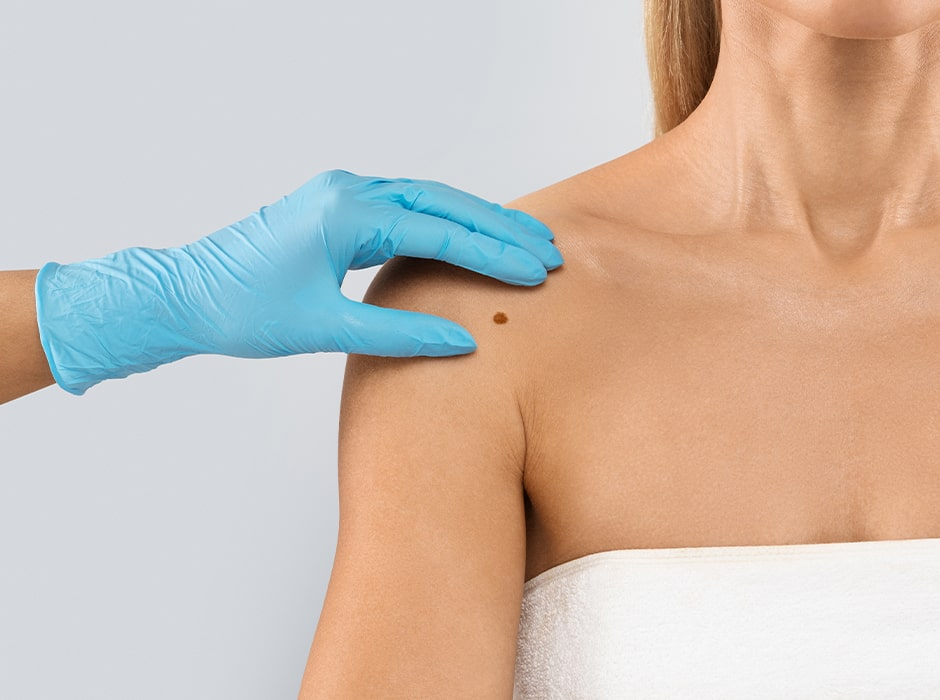
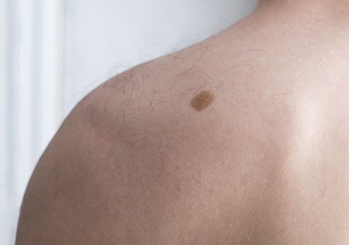
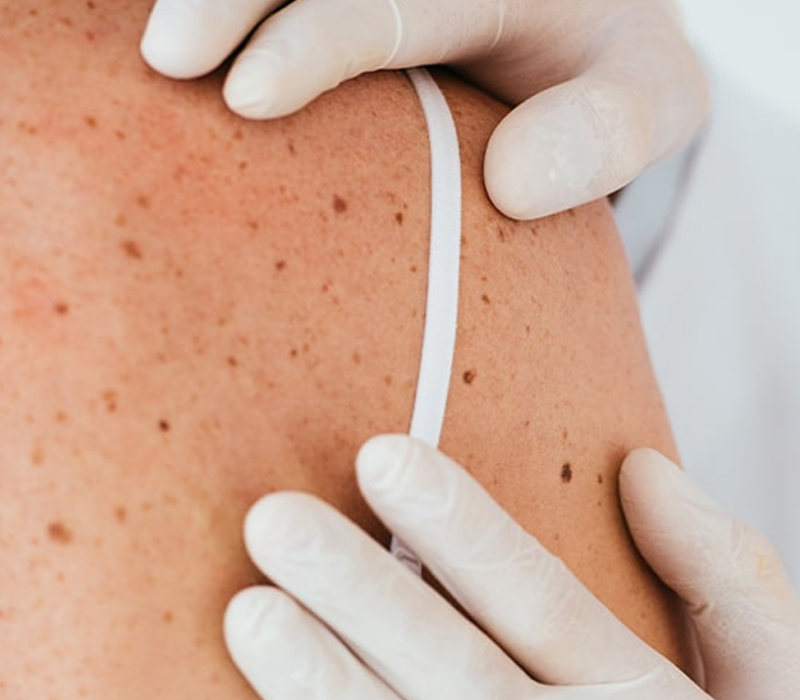

Concerned About Skin Cancer?
If you are concerned about skin cancer, get in touch with our private skin cancer clinic in London now. Our experienced consultant dermatologists can help diagnose and start prompt treatment as required.


The London Dermatology Centre is a leading private skin cancer clinic in London where we offer diagnosis and treatment for the condition. Skin cancers are separated into two categories – melanoma and non-melanoma. Skin cancers are related to cumulative sun exposure and most commonly present in the older population with a lifetime’s history of sun exposure. However, with more of us spending an increasing amount of time outdoors and taking holidays abroad, we are now seeing these tumours in patients in their 20s and 30s. Outdoor workers and people with fair complexions are particularly at risk.

Melanoma is the name given to a cancerous mole and is considered the most serious type of skin cancer. Often, the first sign of melanoma is the appearance of a new mole or a change in an existing mole’s shape, colour, or size. The mole may also become itchy or bleed. It is crucial that any potential melanoma is detected quickly, as it can metastasise (spread) from the skin to other parts of the body, causing cancer elsewhere.
Approximately 13,000 new cases of melanoma are diagnosed each year, making it the 5th most common cancer in the UK. Unlike most other cancers, melanoma primarily affects those under 50 years of age and causes over 2,000 deaths annually in the UK.
One of the main risk factors for developing melanoma is a family history of the disease. You are also at increased risk if you have fair skin that burns easily, freckles, red hair, or a large number of moles. Those who have previously had melanoma or have a weakened immune system are also at higher risk.

You can reduce your risk of dying from melanoma by regularly checking your moles. If you notice any changes to an existing mole or are concerned about a new mole, you should consult a dermatologist. Our mole mapping service at our skin cancer clinic in London offers a convenient way to monitor your moles. An experienced dermatologist will examine them and determine if any need further investigation.
There are more than 100,000 non-melanoma skin cancers diagnosed each year in the UK. Often, the first sign of non-melanoma skin cancer is the appearance of a lump or discoloured patch on the skin that persists for a few weeks and slowly progresses over months or sometimes years. Non-melanoma skin cancer affects more men than women and is more common in the elderly. It presents as either a skin-coloured lump, a scaling lesion, an erosion that will not heal, or an ulcerated lesion. Any such lesion requires immediate assessment by a medical practitioner. Dermatologists are specifically trained to diagnose such lesions by examining them and, if there is any doubt, performing a biopsy. The two main types of non-melanoma skin cancer are basal cell carcinoma and squamous cell carcinoma.
Sometimes referred to as a rodent ulcer, BCC originates from the cells lining the bottom of the epidermis layer of the skin. BCC is the most common type of skin cancer in the UK. These cancers usually begin as small shiny lumps that have a pearl-like rim. Although the appearance of these cancers is variable, people often become aware of them as a scab that bleeds and does not heal completely. Many will just be lumps on the skin that were not there before and have the classic appearance of a raised pearly rim around a central crater.

People sometimes notice these cancers when small blood vessels appear to grow over lumps in the skin. Left untreated, BCC cancer will change in appearance and will become an ulcer. These cancers are often painless but can sometimes be itchy and bleed.
BCCs are usually treatable, but this can be more difficult if the BCC has been left for a long time. Therefore, it is important that if you think you might be at risk of BCC or have a suspicious-looking lump on your skin, you get it examined by a dermatologist. At our private skin cancer clinic in London, we can offer appointments on short notice and ensure you receive prompt treatment.

SCC differs from BCC and often appears as a pink or red lump that is scaly or crusty. These cancers are also variable in appearance but, unlike BCCs, can be tender to touch. SCCs are most common in sun-exposed areas of the skin, such as the head, neck, ears, and the back of the hands, but can occur on any part of the body. Those with a history of sunburn, extensive sun exposure, or who are immunosuppressed are at a greater risk of developing this type of cancer. SCCs need to be removed as they can sometimes spread cancer to other areas of the body. There is also a small possibility of recurrence. Therefore, the sooner it is treated, the more likely it is to be cured. If you are seeking skin cancer treatment in London, our clinic can provide expert care and timely intervention to ensure the best possible outcome.

There are several different treatments available for the various types of skin cancer. The treatment you need will depend on your type of cancer, the extent of the cancer, and your current health. At our skin cancer clinic in London, a dermatologist will guide you to the most suitable treatment following a consultation, examination, and possibly a biopsy of the suspicious lesion.
When it comes to treating skin cancer, there are several effective options available. The choice of treatment depends on the type of skin cancer, its size, location, and the patient’s overall health. Some common treatment methods include:
Topical Medications: Special creams containing anti-cancer agents can be applied directly to the skin. These creams help to kill the cancer cells without the need for surgery. They are particularly useful for superficial skin cancers and pre-cancerous conditions.
Curettage and Electrodesiccation: This procedure involves scraping away the cancerous tissue with a curette, a small spoon-shaped instrument. After scraping, the area is treated with an electric needle to destroy any remaining cancer cells. This method is often used for small, well-defined cancers.
Surgical Excision: The cancerous lesion is cut out along with a margin of healthy tissue surrounding it. This method is highly effective for most types of skin cancer and ensures complete removal of the tumour. The excised tissue is usually sent to a laboratory for further analysis.
Cryotherapy: In this treatment, liquid nitrogen is applied to the cancerous lesion to freeze and destroy the abnormal cells. This method is commonly used for pre-cancerous conditions and small, superficial skin cancers. The treated area will blister and shed the cancerous cells.
Photodynamic Therapy (PDT): PDT involves applying a photosensitizing agent to the skin, which is absorbed by the cancer cells. The area is then exposed to a specific wavelength of light, activating the agent and destroying the cancer cells. This method is effective for superficial skin cancers and certain pre-cancerous conditions.
Radiotherapy: In cases where surgery is not an option, radiotherapy can be used. High-energy radiation is targeted at the cancerous area to kill the cancer cells. This method is often used for skin cancers located in difficult-to-treat areas or for patients who are not good candidates for surgery.

At our skin cancer clinic in London, our expert dermatologists will evaluate your specific condition and recommend the most suitable treatment plan for you. Whether you need a minor procedure or a more extensive treatment, our team is dedicated to providing the best possible care. In most cases, we can offer same-day treatment. For more information regarding our skin cancer treatment service, please contact us on 020 7467 3720.
Yes, we recommend booking promptly if you notice any changes in a mole or skin lesion. Early assessment can make a significant difference in outcomes.
Your dermatologist will carry out a full skin examination and may use a dermatoscope to assess any suspicious areas. If needed, they may recommend a biopsy or mole mapping for further evaluation.
Yes, we can remove suspicious moles under local anaesthetic for diagnostic or treatment purposes. All removed tissue is sent for laboratory analysis to confirm the diagnosis.
Yes, we assess and diagnose all major types of skin cancer, including basal cell carcinoma, squamous cell carcinoma and melanoma. Our consultants have extensive experience in skin cancer detection and management.
Biopsy results are typically available within one to two weeks. Your dermatologist will contact you directly to explain the findings and discuss next steps if treatment is needed.
We offer a range of treatments including surgical excision, topical therapies, cryotherapy, and referral to oncology specialists where necessary. Your dermatologist will recommend the most appropriate plan for your diagnosis.
Yes, we offer priority appointments for patients with urgent concerns. Early diagnosis and peace of mind are our top priorities.
Yes, we provide regular follow-up checks to monitor your skin and reduce the risk of recurrence. Ongoing support and education are part of your long-term care plan.
If you are concerned about skin cancer and seeking treatment in London, our clinic is conveniently located at 69 Wimpole Street in Central London. For those travelling by underground, Bond Street Station is just a short walk away. Ample street parking is available for those driving to our skin clinic. Additionally, we provide wheelchair access for individuals who require it.
Monday - Friday: 9.00 AM - 5.30 PM
Saturday & Sunday: Closed
69 Wimpole Street,
London W1G 8AS.
If you are concerned about skin cancer, get in touch with our private skin cancer clinic in London now. Our experienced consultant dermatologists can help diagnose and start prompt treatment as required.